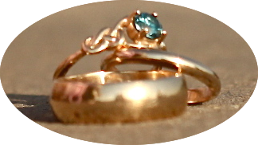
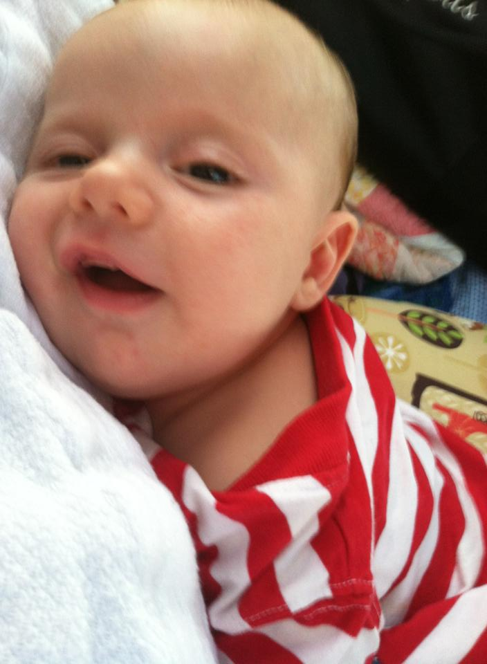
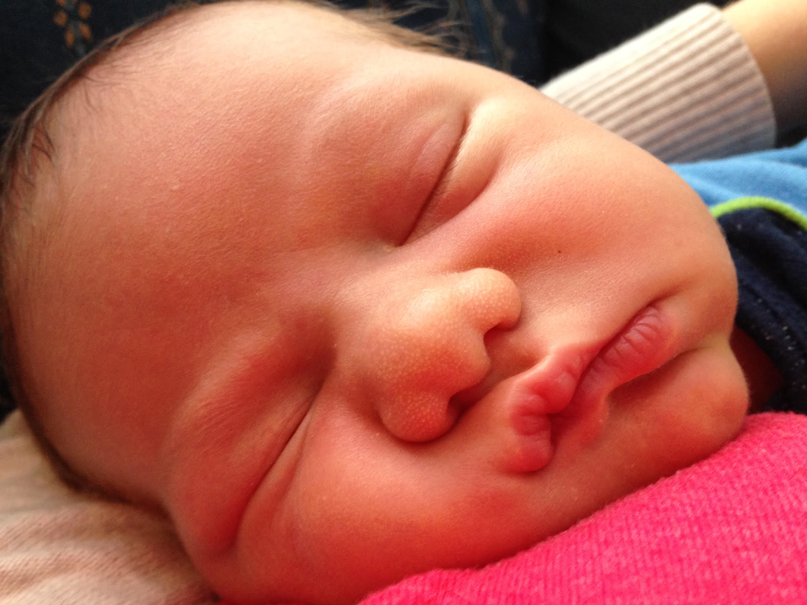
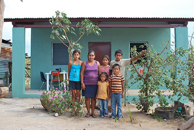
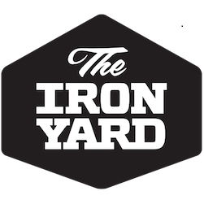

bjlinville1@gmail.com | 330-267-8396
Recent projects
On the Drawing Board
This project is a recent mock up of a one page web app for a potential client. I used Ruby on Rails, a considerable amount of CSS, Javascript, & Jquery through a template, some HTML, and bootstrap. This project was mostly front-end design & development, but I also spent time consulting with the client on UX/UI and discussing their needs moving forward. The result was a full time offer, but it was not a good fit, and I declined.
Primary technologies
- Ruby on Rails
- HTML & ERB
- CSS
Other tools
JQuery, Twitter Bootstrap, Heroku for deployment, and Git for version control. Feel free to check it out hereAtlas Project
This is a forecasting application still under development for a non-profit that I co-founded with a friend. I built it using Ruby on Rails with a MySQL database, CSS, HTML, Javascript, HAML, ERB, bootstrap, Devise, and wore all the hats for design, front & back end development, and project management. I spent a good deal more time on back end design during this project, and developed a much better grasp on WHY different designs make sense for different situations. I’m looking forward to finishing the functional pieces soon, and touching up the aesthetics.
Primary technologies
- Ruby on Rails
- HTML, HAML & ERB
- CSS
- AJAX
- MYSQL database
Other tools
JQuery, Bootstrap, and Git for version control. Feel free to check it out by clicking here. If something isn't working, please let me know! This project is still under development and I'd love any feedback I can get!SalvageBits
SalvageBits is an application designed for a start up that had a customer who needed help sorting, editing, and re-organizing large quantities of legacy data. I was given the task of designing & building a program that would allow a non-developer to take a database that contained lots of unusable data, and convert it into usable data, by their definitions. I did this by creating a process that involved identifying unique patterns, and then allowing the user to build filters that would iterate over all the data, collect the appropriate pieces, and update each of the patterns according to user inputs. I built in Rails, with a MySQL database, a twitter bootstrap front end – light on the jquery & javascript, but there’s a little in there – CSS, HTMAL, and given that the client was using Xcel, I outlined a couple steps for them in Xcel as well. I wore all the hats for this project: design, front-end, back-end, project manager, and had a good deal of face time communicating with the client to better understand their problems and desires.
Primary technologies
- Ruby on Rails
- HTML, HAML & ERB
- CSS
- AJAX
- MYSQL database
Other tools
JQuery, Bootstrap, and Git for version control.Smoulder
Smoulder is a responsive, one-page web application designed to leverage big data to give married folks a quick and convenient way to make their spouse feel loved and cherished. This application was my final project at the Iron Yard, and is something I'd love to come back to one day. The primary technologies used were Ruby on Rails, HTML, HAML, & ERB, CSS, AJAX, and MySQL, and other tools included Jquery, Bootstrap, Tablesorter, FullCalendar plug-ins, as well as many gems including devise, geocoder, twillio, and paperclip/Figaro. I used Git for version control and Rspec (capybara & FactoryGirl) for testing. I wrote a detailed scrum sheet for this project, along with wireframes, and feature goals and timelines.
Primary technologies
- Ruby on Rails
- HTML, HAML & ERB
- CSS
- AJAX
- MYSQL database
Other tools
JQuery, Twitter Bootstrap, Tablesorter, and FullCalendar Plug-ins, as well as many gems, including Devise, Geocoder, Twillio, and Paperclip/Figaro. Also Heroku for deployment, RSpec (Capybara, FactoryGirl, etc) for testing, and Git for version control. Feel free to check it out by clicking here, and signing in with the username randy@stamm.com, and password14 as the password.E-commerce app
My first job out of school was an app design consultation. I worked with an entrepreneur to flesh out his idea for a web app for a grocery delivery service. Technology used was Ruby on Rails with a MySQL database, CSS, HTML, Javascript, HAML, ERB, bootstrap, Spree and Devise, and I did both front and back end development. I left the project after the basic functionality was complete.
Primary technologies
- Ruby on Rails
- HTML, HAML & ERB
- CSS
- AJAX
- MYSQL database
Other tools
Devise, Spree, and Git for version control.About me
Novice husband, father, and romantic.
Amateur philosopher, economist, and athlete.
Expert analyst, creative, and strategist.
Full Stack Web Developer.
My resume

June 9th, 2012
The Big Day
On this day in 2012, I married the love of my life, Jennifer Marion Grant. I have never made a better decision.

July 27th, 2013
Raef Arrives on Scene
My eldest son experiences gravity, direct light, breathing, and a multitude of other sensory inputs for the first time!

January 24th, 2013
Felix is Born
My second son enters the world, and promptly doubles his weight in 7 days.
2007
2008
2009
2010
2011
2012
2013
2014
2015

Aug. 2007-May. 2011
Malone University
Undergraduate studies in History, Philosophy, and Political Science.

Nov 2013
Bricks Build
Co-founded a non-profit that is now partnering with World Help's small homes program.

Let's connect
I am currently looking for an exciting opportunity to continue developing my back-end engineering skills.
Shoot me an email at bjlinville1@gmail.com and let's chat!
You can also find me online.